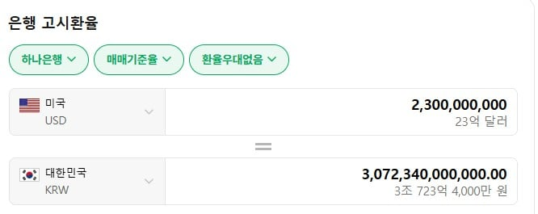

37 · 5 · 11 시간 전 · 원문

수집 당시 댓글 6개
hrsoi · 2 일 전
뭔가 막 와 개재밌다 이런느낌은 아닌데 하다보면 5시간 지나있음. 갓겜맞는건가?
들켜서바꿈 · 2 일 전
여주 외모 성격 너무 씹비호감이라 몰입이 안됨
세상의중심에서상태창을외치다 · 2 일 전
나도 1챕터는 그랫음 존나싫엇지
근데 2챕터가면 생각이 바뀔수도잇음ㅋㅋ
개미더듬이풍차돌리기 · 2 일 전
던파 3년 매출액이군
함대길 · 2 일 전
던파가 매출이 그렇게 높다고?
하나코나나 · 2 일 전
방송인 하는거 조금만 봐서 그런가 그래픽 좋아졌네 말곤 뭔가 도파민이 안느껴짐
pc나와서 직접하면 좀 다를려나
뭔가 막 와 개재밌다 이런느낌은 아닌데 하다보면 5시간 지나있음. 갓겜맞는건가?